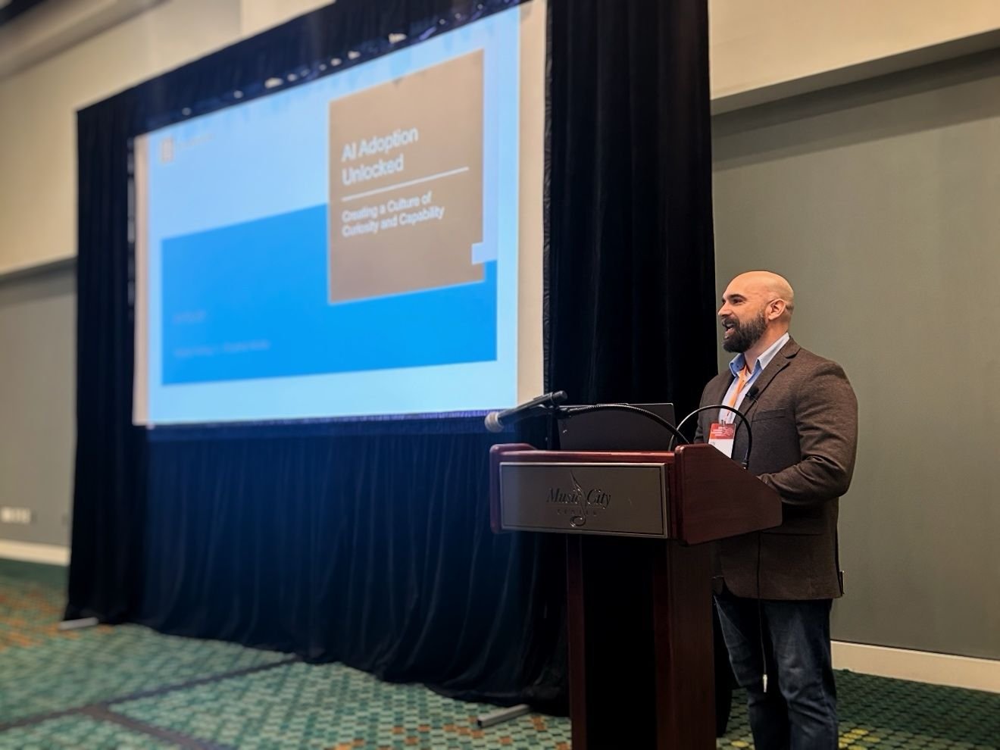
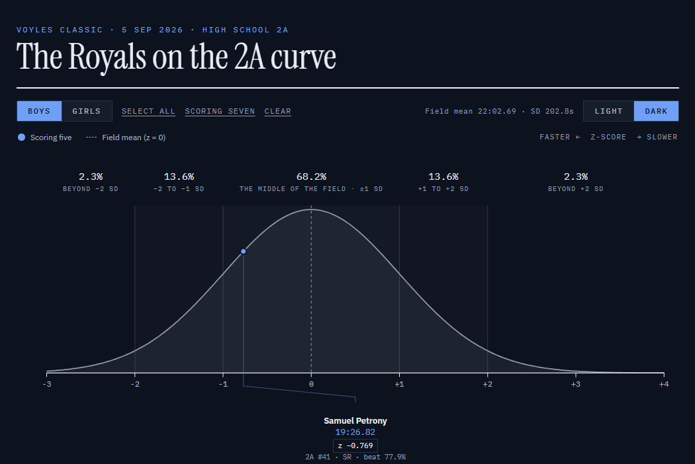
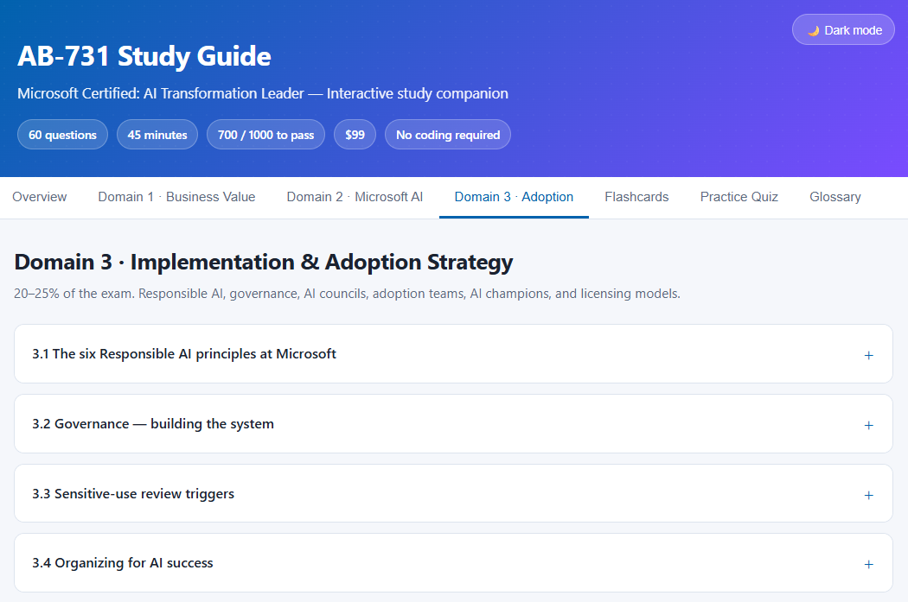
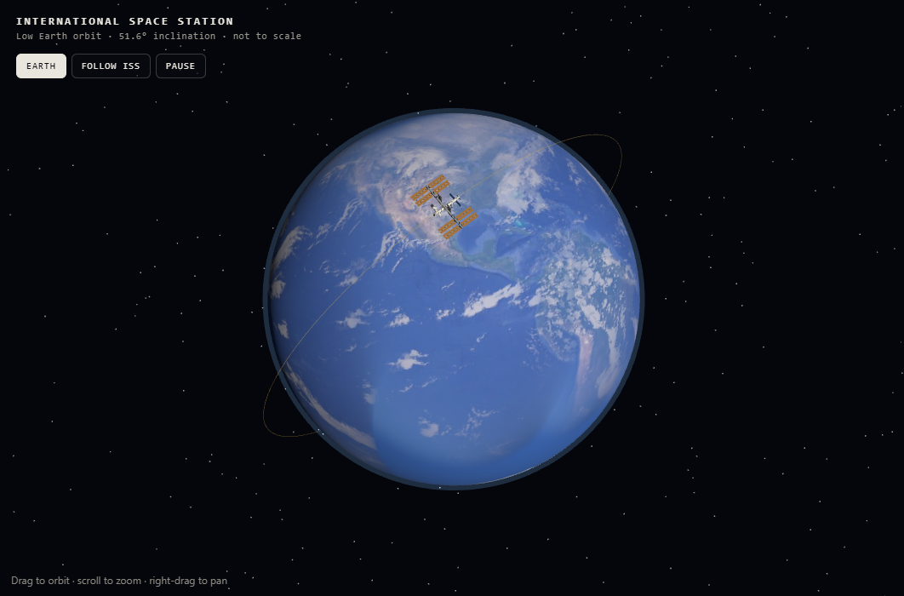
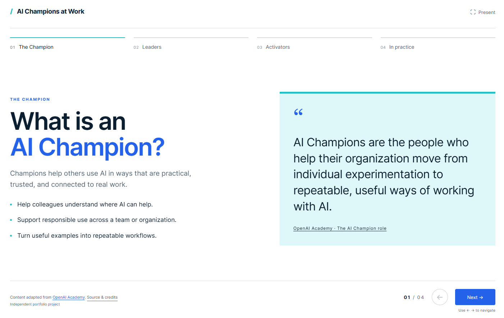
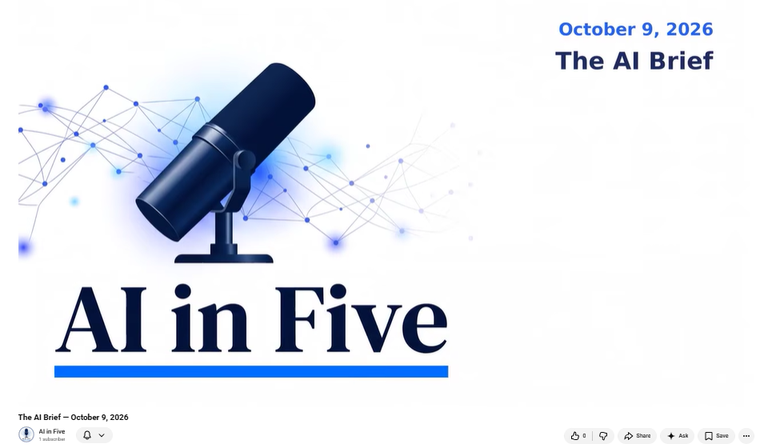

Samuel Petrony, Jr.
Moving organizations from interest in AI to measurable capability.

I bridge the gap between enterprise AI strategy and operational adoption. As an AI Enablement and Adoption Lead, I move organizations past the “interest” phase into measurable capability.
I built a global AI Champions Program from an executive directive into a thriving community. My focus is equipping professionals to discover high-value use cases, apply governance, and integrate AI seamlessly into complex workflows.
- Program Architecture: Design AI enablement curricula, peer-led learning, and global champion networks.
- Structured Prompting: Train teams on replicable prompting (Goal, Context, Sources, Expectations) to reduce hallucination risk.
- Change Management: Drive enterprise adoption via structured training and continuous feedback loops.
- Responsible AI: Translate fairness, reliability, safety, privacy, transparency, and accountability into actionable guidelines.
- Data Readiness: Advocate for data hygiene and permission-aware environments to enable retrieval-augmented generation (RAG).
- Cost Stewardship: Optimize compute spend and manage token economics by right-sizing AI tools to the specific task.
While my current execution focuses heavily on enablement and adoption, I bring comprehensive, certified expertise in architecting enterprise AI scaling strategies:
- Platform Strategy: Deep understanding of the “Buy vs. Extend vs. Build” decision framework, evaluating when to deploy turnkey copilots, leverage low-code platforms like Copilot Studio, or develop custom pro-code solutions.
- Agentic Workflows: Expertise in designing architectures that transition organizations toward autonomous digital teammates and multi-agent orchestration within human-in-the-loop guardrails.
- MS in Data Analytics, Southern New Hampshire University
- Microsoft Certified: AI Transformation Leader
- Generative AI Leadership Certificate, Vanderbilt University
- Completed UNESCO Global MOOC on the Ethics of AI
- 2026 NTC Emerging Leaders in Technology (ELITE) Cohort
- Speaker: “AI Adoption Unlocked” (2025 NTC Innovation Summit)
- Spearhead AI enablement and adoption initiatives across the Global Technology & Operations (GTO) division.
- Lead the enterprise AI Champions Program, driving generative AI adoption through structured change management, targeted training, and peer-led learning.
- Execute end-to-end automation projects utilizing low-code and enterprise AI platforms to eliminate manual operational work globally.
- Designed and deployed the foundational AI Champions pilot, establishing the program’s strategic roadmap and training curriculum.
- Delivered targeted generative AI use-case training sessions to directly accelerate operational adoption.
- Reengineered and automated manual workflows end-to-end leveraging enterprise AI and low-code platforms.
- Partnered with organizational leadership to scope process automation opportunities and implement Power BI reporting tools.
- Presented “AI Adoption Unlocked” at the Nashville Technology Council’s Innovation Summit.
- Integrated generative AI solutions directly into daily operational workflows, significantly cutting manual effort and improving reporting accuracy.
- Applied LLM prompt engineering techniques to accelerate complex analysis and efficiently resolve operational discrepancies.
- Directed end-to-end process automation initiatives.
- Established data readiness for AI by building semantic data models, replacing legacy Excel reporting with scalable, automated Power BI dashboards for executive decision-makers.
- Streamlined workflows and mitigated risk through applied data analytics best practices.
- Pioneered early AI adoption by developing a Lunch and Learn series, empowering peers to explore and implement available AI tools.
- Leveraged LLM prompt engineering to accelerate root-cause analysis and streamline documentation processes.
- Laid the digital groundwork for future AI integrations by automating legacy workflows using VBA.
- Built robust data models, executive monitoring dashboards, and Power BI visuals to support data-driven decision-making.
- Led cross-functional process improvement initiatives that mitigated process risk.
- Partnered cross-functionally with technology teams to optimize and improve collateral and reconciliation systems.
- Led comprehensive onboarding, mentorship, and training programs for incoming team members.
- Produced critical collateral reporting to support enterprise risk management while running daily margining on OTC exposure.
- Built and deployed automated quote generators in Excel, significantly cutting manual pricing workloads and increasing efficiency.
- Leveraged data analytics to optimize inventory forecasting and utilized GIS tools to sharpen sales prospecting.
- Conducted P&L and market trend analysis to guide strategic pricing decisions, find competitive advantages, and launch new products.
- Structured complex contracts and consistently presented data-driven solutions to clients.
- Led digital marketing initiatives, actively using campaign data to track and improve engagement.
- Built Excel heat maps to visualize complex data sets and optimize resource allocation.
- Developed data-driven operational fleet strategies, ran P&L analysis, and presented analytical solutions to clients.
- Used market data to design targeted B2B rental programs, successfully growing the fleet by 62% through local partnerships.
- Launched a new branch in a role created specifically to drive market expansion while managing full sales cycles.
- Managed P&L and daily operations for one of the highest-volume U.S. Commercial Truck branches.
- Leveraged historical demand data to plan fleet capacity and utilized customer feedback data to achieve top-tier national satisfaction ratings.
- Applied strict risk controls and structured client contracts to protect business operations.
- Support my son’s team as its data analyst.
- Automate race-result extraction into Google Sheets with Claude Cowork.
- Built z-score models that normalize course conditions so coaches can compare athletes fairly. See the XC Bell Curve ↓

XC Bell Curve
Helping my son and his teammates understand race performance beyond their times. Z-scores normalize course conditions so every runner sees where they sit in the field.
View project →
AB-731 Study Guide
My study materials for the Microsoft Certified: AI Transformation Leader exam, turned into an interactive guide with domain breakdowns, flashcards, a practice quiz and glossary.
View project →
ISS Orbit Animation
An interactive 3D model of the International Space Station in low Earth orbit — built because I love space exploration and technology. Drag to orbit, follow the ISS, zoom in.
View project →AI Is Not a Mind Reader
A short, 1950s sci-fi-themed, AI-generated video, using my own likeness and voice, as a fun way to explain why the Goal, Context, Sources, Expectations prompting framework matters when working with LLMs.
Watch on LinkedIn →
AI Champions at Work
I created this interactive deck using ChatGPT Sites, adapting source material from OpenAI Academy into a guide to AI Champion roles and practices.
View project →
AI in Five
An AI-assisted news-to-video workflow. Meta Muse creates the briefing; I validate the stories before publication.
Watch on YouTube →